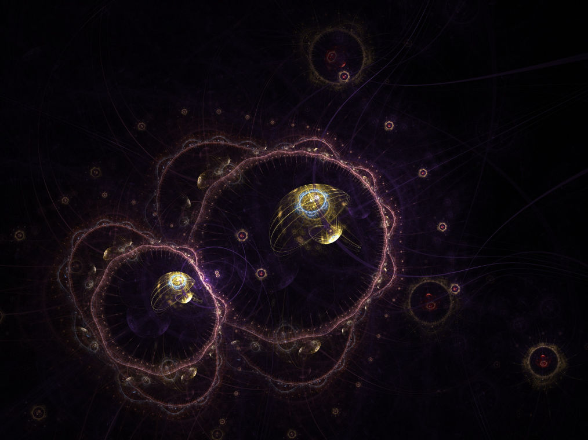
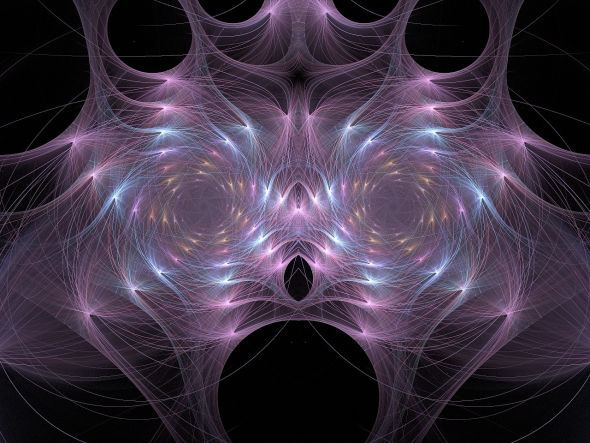
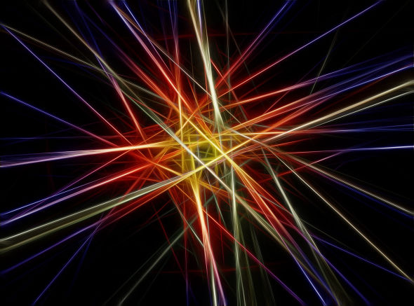

I am currently working on the dynamical Lamb effect for my Ph.D research with Prof. Roman Kezerashvili and Prof. Oleg Berman. In particular, the dynamical Lamb effect is the excitation of an atom in a cavity and the creation of photons from the vacuum due to the nonadiabatic change of boundary conditions of the cavity. Superconducting circuits provide a way to engineer artificial atoms and cavities with Josephson junctions and superconducting transmission lines with the possibility of tuning the parameters of the system in a short time interval. This allows to enter the nonadiabatic regime, where the dynamical Lamb effect could be observed.

I also work on implementing quantum algorithms on the available noisy quantum computers like IBM Q and Rigetti with other members of the quantum computing community. The algorithm I have implemented touch topics from quantum cryptography, quantum foundations and quantum machine learning.

During 2015-2016 I have worked on my Master Thesis with Prof. Alessandro Tomasiello, studying the effects of the space-time geometry on the allowed fields in a supergravity theory. Depending on the compacitfication chosen, the equations of motions of the field in the non-compactified dimensions change. This leads to different mass spectra of the fields.

My Bachelor degree focused on Ultrafast Optics. In 2013, I worked with Prof. Giulio Cerullo for my Bachelor Thesis on the experimental realization of a pump-probe experiment for sample characterization. I also worked with Prof. Franz Kaertner in 2014 in DESY, Hamburg. The research project involved building a Balaced Optical Cross-Correlator for the coherent synthesis of multiple laser beams.